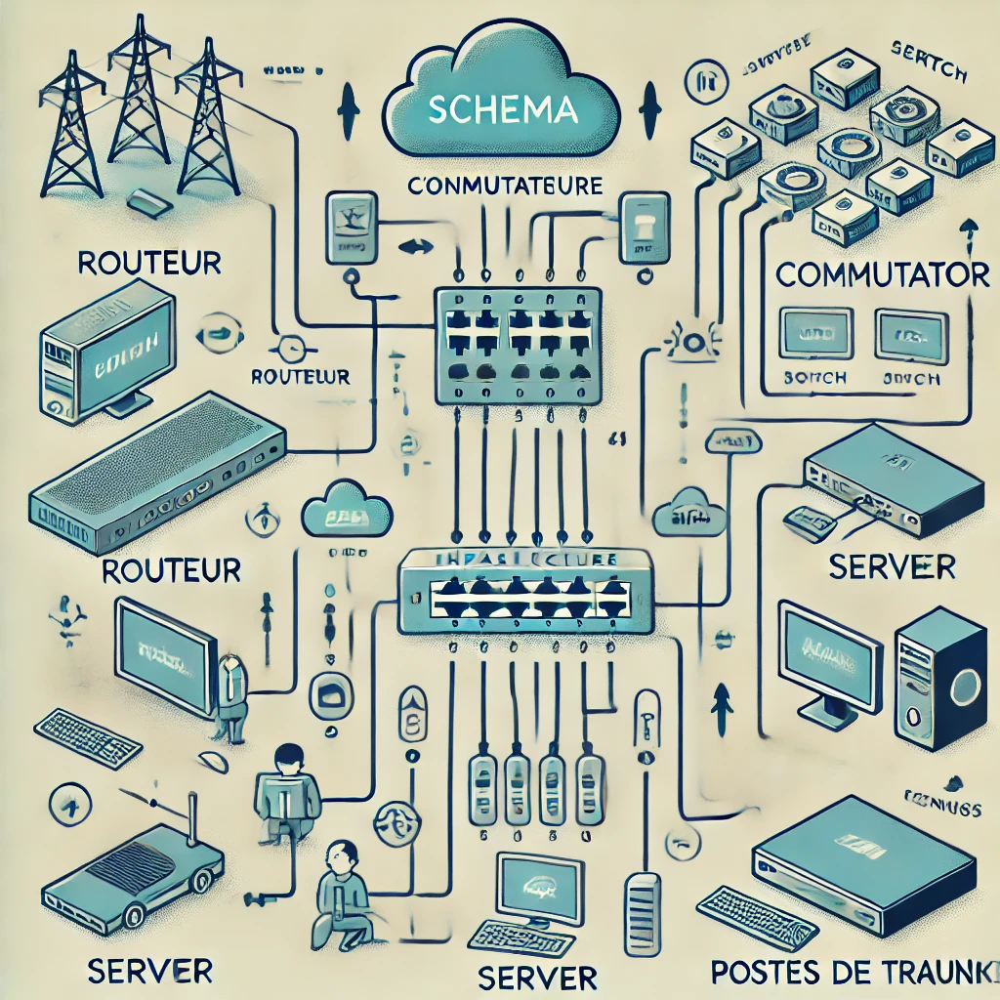

Immersion chez DINSCOM
Fibre optique, maintenance réseau et rédaction technique — mon premier stage en entreprise dans le secteur des infrastructures.
Contexte du stage
Au cours de ma première année de BTS SIO option SISR, j'ai effectué mon stage chez DINSCOM, une entreprise spécialisée dans l'installation et la maintenance de réseaux en fibre optique.
Intégré à l'équipe technique pendant six semaines, j'ai participé à des interventions terrain, découvert le fonctionnement d'une entreprise de maintenance réseau, et appliqué mes connaissances en infrastructure.
Mission principale
Ma mission principale a consisté à créer un plan et un rapport détaillé de l'infrastructure réseau de l'entreprise, en intégrant :
- ✓ L'inventaire et la gestion des équipements informatiques et de diagnostic
- ✓ L'accompagnement lors des interventions terrain pour la maintenance et la réparation des réseaux de fibre optique
- ✓ La rédaction de rapports d'intervention et de guides expliquant les procédures standard
- ✓ L'audit de bon fonctionnement des équipements chez les clients
Schéma de l'infrastructure réseau

Bilan du stage
Ce stage m'a permis d'acquérir une expérience pratique précieuse dans le domaine des infrastructures réseau. J'ai pu développer mes compétences techniques et ma capacité à travailler en équipe sur le terrain.
Immersion complète sur des interventions réelles en fibre optique
Diagnostic réseau, documentation technique, autonomie sur le terrain
S'adapter rapidement aux environnements clients très variés
Travail en équipe, communication professionnelle, rigueur